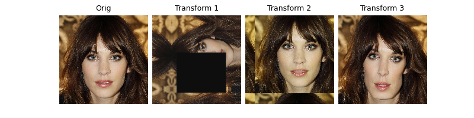

Note
Go to the end to download the full example code.
Image transforms for equivariance & augmentations
We demonstrate the use of our deepinv.transform module for use in
solving imaging problems. These can be used for:
Data augmentation (similar to
torchvision.transforms)Building equivariant denoisers (
deepinv.models.EquivariantDenoiser) for robust denoising (e.g from Terris et al., Equivariant plug-and-play image reconstruction)Self-supervised learning using Equivariant Imaging from Chen et al., Equivariant Imaging: Learning Beyond the Range Space: see Image transformations for Equivariant Imaging, Self-supervised learning with Equivariant Imaging for MRI. for thorough examples.
See docs for full list of implemented transforms.
1. Data augmentation
We can use deepinv transforms in the same way as torchvision
transforms, and chain them together for data augmentation. Our
transforms are customisable and offer some group-theoretic properties.
We demonstrate a random roto-scale combined with a random masking, and a
constrained pixel-shift with a random colour jitter.
Note that all our transforms can easily be inverted using the method transform.inverse().
First, load a sample image.
import deepinv as dinv
from torchvision.transforms import Compose, ColorJitter, RandomErasing, Resize
x = dinv.utils.load_url_image(dinv.utils.demo.get_image_url("celeba_example.jpg"))
# Random roto-scale with random masking
transform = Compose(
[
dinv.transform.Rotate() * dinv.transform.Scale(),
RandomErasing(),
]
)
# Constrained pixel-shift with a random colour jitter
transform2 = Compose(
[
dinv.transform.Shift(shift_max=0.2),
ColorJitter(hue=0.5),
]
)
# Random diffeomorphism
transform3 = dinv.transform.CPABDiffeomorphism()
dinv.utils.plot(
[x, transform(x), transform2(x), transform3(x)],
titles=["Orig", "Transform 1", "Transform 2", "Transform 3"],
)


- 
/opt/hostedtoolcache/Python/3.9.20/x64/lib/python3.9/site-packages/torch/functional.py:534: UserWarning: torch.meshgrid: in an upcoming release, it will be required to pass the indexing argument. (Triggered internally at ../aten/src/ATen/native/TensorShape.cpp:3595.)
return _VF.meshgrid(tensors, **kwargs) # type: ignore[attr-defined]
By letting n_trans be equal to the full group size, all transforms
are recovered:
reflect = dinv.transform.Reflect(dim=[-2, -1], n_trans=4)
rotate = dinv.transform.Rotate(multiples=90, positive=True, n_trans=4)
dinv.utils.plot(
[reflect(x), rotate(x)], titles=["Full 2D reflect group", "Full rotate group"]
)
2. Equivariant denoiser or plug-and-play
Suppose we want to make a denoiser equivariant to the rotoreflect group, taken as the group product of the 90 degree rotations (order 4) and 1D reflects (order 2). We can do this with our transform arithmetic (note this results in the full dihedral group \(\text{Dih}_4\) of order 8):
transform = rotate * dinv.transform.Reflect(dim=[-1], n_trans=2)
Let’s simulate some Gaussian noise and turn a simple (median filter)
denoiser into an equivariant denoiser
(deepinv.models.EquivariantDenoiser):
What’s going on under the hood? We use the transform.symmetrize
method to symmetrize the function \(f\) with respect to a projective
transform (with a Monte Carlo approach of n_trans=2 transforms per call):
# Example non-equivariant function
f = lambda x: x[..., [0]] * x
# Example non-linear transform with n=2
t = dinv.transform.projective.PanTiltRotate(n_trans=2, theta_max=10, theta_z_max=0)
# Symmetrize function with respect to transform
f_s = t.symmetrize(f, average=True)
dinv.utils.plot(
[x, f(x), f_s(x)], titles=["Orig", "$f(x)$", "$\sum_i T_i^{-1}f(T_ix)$"]
)
3. Equivariant imaging
We can also use our transforms to create the self-supervised equivariant imaging loss. See Image transformations for Equivariant Imaging, Self-supervised learning with Equivariant Imaging for MRI. for examples of self-supervised learning for MRI and inpainting. For example, the EI loss can easily be defined using any combination of transforms:
loss = dinv.loss.EILoss(
transform=dinv.transform.projective.Affine() | dinv.transform.projective.Euclidean()
)
Total running time of the script: (0 minutes 5.259 seconds)